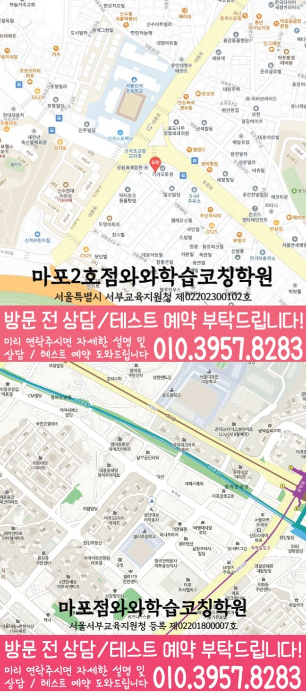

30초 핵심 안내
신수동 영수학원 선택 전 확인할 기준
신수동 영수학원에서는 신수동 초3~초6, 중1~중3, 고1~고3 학생의 학년 단계와 두 과목의 오답 원인과 복습 순서를 먼저 살펴봅니다. 센터 위치는 서울 마포구 토정로 252 승지빌딩 3층이며, 제공된 학교 참고 정보는 신석초·염리초·용강초·서강초·우이초·서울여중·동도중·신수중·서울여고·숭문고·광성고·한성고·배문고이며 수업 시간·교습비·반 편성은 상담에서 다시 확인해야 합니다.
English & Math Learning Guide
신수동 영수학원 안내입니다. 초3~초6, 중1~중3, 고1~고3 학생의 영어·수학 시작점과 영어 어휘·구문과 수학 개념·적용의 연결, 학교 학습·복습·상담 기준을 확인하세요.
30초 핵심 안내
신수동 영수학원에서는 신수동 초3~초6, 중1~중3, 고1~고3 학생의 학년 단계와 두 과목의 오답 원인과 복습 순서를 먼저 살펴봅니다. 센터 위치는 서울 마포구 토정로 252 승지빌딩 3층이며, 제공된 학교 참고 정보는 신석초·염리초·용강초·서강초·우이초·서울여중·동도중·신수중·서울여고·숭문고·광성고·한성고·배문고이며 수업 시간·교습비·반 편성은 상담에서 다시 확인해야 합니다.
수업 안내 이미지

센터 위치 안내

신수동 영수학원을 알아볼 때는 초등 고학년 학생의 단원 연결을 보완하는 과제와 늦은 시작을 조정하는 점검 주기가 각각 제시되는지부터 보세요. 구체적으로 생각해 볼 학생은 초등 고학년 가운데 새 단원을 시작할 때 이전 개념과의 연결 고리를 찾지 못하는 학생이며, 계획표는 자세히 쓰지만 실제 시작 시각은 자주 늦어지는 편입니다. 대표 어려움이 수학 수행에서 먼저 나타나므로 수학 단원 누적을 핵심 항목으로 살펴보고, 영어 문장 구조는 실제 수행 자료에서 필요가 확인될 때만 보완 항목으로 두고, 단원 연결 보완 기준과 늦은 시작 조정 기준은 서로 다른 자료에서 확인합니다. 신수동 영어·수학 계획에는 과목별 시작 자료, 완료 기준과 다음 오답 확인 날짜를 각각 남기는 편이 좋습니다. 신수동에서 영수학원을 비교할 때 결과 약속보다 수업 전후의 영어·수학 기록을 우선해서 보는 기준을 설명합니다.
서울 마포구 신수동에서 영수학원을 살필 때에는 과목명만 비교하기보다 실제 이동 경로와 가능한 수업 학년을 함께 확인해야 합니다. 제공된 센터 위치는 서울 마포구 토정로 252 승지빌딩 3층입니다. 영어·수학 공통 가능 학년은 초3·초4·초5·초6·중1·중2·중3·고1·고2·고3입니다.
신수동 학교 학습과의 연결은 제공 목록인 신석초·염리초·용강초·서강초·우이초·서울여중·동도중·신수중·서울여고·숭문고·광성고·한성고·배문고를 참고하되, 실제 수업 판단은 최근 시험 범위와 오답 유형을 중심으로 진행합니다. 제공되지 않은 학교나 생활권 정보는 임의로 추가하지 않았습니다.
제공된 센터명은 와와학습코칭센터 마포2호점, 등록 정보는 서울특별시 서부교육지원청 제02202300102호입니다. 신수동에서 상담할 때에는 표시된 정보가 현재 시간표와 교습비 조건에도 동일하게 적용되는지 다시 확인합니다.
현재 점수만 보아서는 초등 고학년 학생이 새 단원을 시작할 때 이전 개념과의 연결 고리를 찾지 못하는 이유를 알기 어렵습니다. 단원 연결 보완과 늦은 시작 조정을 함께 살필 때, 이 생활권의 특정 학교 성향을 추정하기보다 학생이 설명을 멈추는 순간, 답을 고친 흔적, 다시 푼 날짜를 점검하면 우선순위가 더 선명해집니다.
용강초 학생이 이 지역 학원을 알아볼 때는 학교에서 별도 평가 일정이나 학습 범위를 안내받았는지부터 점검해야 합니다. 학교 이름만으로 평가 방식을 미리 정하지 않으며, 단원 연결 보완과 늦은 시작 조정은 학교 정보가 아니라 학생의 학습 기록에서 확인합니다. 학생이 우이초에 재학 중인 경우에도 교과서, 수업 필기, 평가 범위표를 상담에 가져가면 과목별 학습관리와 학교 학습을 연결할 질문이 구체화됩니다. 제공된 학원 주소는 '서울 마포구 토정로 252 승지빌딩 3층'입니다. 학생은 학교나 가정의 실제 출발 시각을 대입해 등하원 계획을 점검해야 하며, 이동 조건은 단원 연결 보완과 늦은 시작 조정과 구분해 기록합니다. 학교에서 평가 범위를 따로 알린 경우에는 학생의 주간표에 반영하되 평소 일정은 영어와 수학의 반복 습관을 기준으로 구성하며, 단원 연결 보완 자료와 늦은 시작 조정 기록은 학교별 추정과 분리합니다.
상담에서는 확인된 학년 범위와 현재 교재를 기준으로 이번 주에 실행할 분량과 누적 복습 분량을 따로 정합니다.
영어는 어휘 인출·문장 구조·독해 근거를, 수학은 개념 이해·조건 해석·풀이 과정을 나누어 살펴봅니다.
두 과목의 오답 원인과 복습 순서가 필요한지는 점수 한 줄보다 학생이 영어 근거와 수학 풀이를 말로 다시 설명하는 과정에서 확인합니다.
단어를 몇 번 시험하는지보다 학생이 그 어휘를 지문 근거와 서술형 문장에 적용하는지가 중요하며, 영어 문장 구조 점검 결과와 늦은 시작 조정 기록은 따로 남깁니다. 초등 고학년 학생의 영어에서는 이 생활권 수업이 선택한 답의 근거와 해석 이유를 다시 묻는지 살펴보되, 단원 연결 보완은 전체 학습 자료에서, 영어 문장 구조는 영어 결과물에서 따로 살핍니다. 학생에게 맞는 자료는 유명 교재인지보다 읽는 과정의 어느 단계에서 도움을 주는지로 판단할 수 있고, 영어 피드백에는 문장 구조의 다음 행동과 늦은 시작 조정 시점을 함께 적습니다.
수학 오답의 가치는 학생이 오류 원인을 나누고 며칠 뒤 같은 풀이를 재현할 때 확인되며, 수학 단원 누적 점검 결과와 늦은 시작 조정 기록은 따로 남깁니다. 학생의 수학 학습관리 기록에는 틀린 문항 번호뿐 아니라 첫 시도와 두 번째 시도의 풀이 차이가 남는 편이 좋으며, 단원 연결 보완은 전체 학습 자료에서, 수학 단원 누적은 풀이 결과에서 따로 살핍니다. 수학의 선행 여부는 학생이 이전 단원 핵심 문제를 스스로 완결하는지 보고 선택할 필요가 있고, 초등 고학년 학생의 수학 과제에서는 단원 누적 점검 결과와 늦은 시작 실행 여부를 구분합니다.
학생의 계획은 첫 진단으로 고정하지 말고 다음 확인 날짜를 먼저 정해 두어야 하며, 계획 수정의 근거는 단원 연결 보완 기록과 늦은 시작 조정 기록으로 나누어 남깁니다. 첫 주에는 초등 고학년 학생의 영어 문장 구조와 수학 단원 누적을 살필 수행 기록과 문제 풀이를 보관하고 수업 조건은 별도 칸에 적습니다. 이 생활권의 첫 점검에서는 완료량과 함께 시작 시각, 질문 흔적, 재풀이 결과를 나누어 보고, 초등 고학년 학생의 점검일에는 단원 연결 보완 기록과 늦은 시작 실행 여부를 각각 다시 봅니다. 가정은 첫 점검 결과로 학생이 유지할 분량과 되돌아볼 단원을 따로 정할 수 있고, 다음 계획에는 단원 연결 보완 일정과 늦은 시작 조정 시점을 따로 표시합니다.
Information Basis
센터명·주소·등록번호·학교 참고 목록은 제공 자료 범위에서 확인했습니다. 실제 수업 가능 학년과 과목, 시간표는 상담 시점에 다시 확인해야 합니다.
FAQ
영어 지문 한 편, 수학 오답 몇 문항, 사용 교재와 주간 계획표를 상담에 가져가면 되며, 준비한 자료에서 단원 연결 보완 단서와 늦은 시작 조정 단서를 구분합니다. 자료를 통해 새 단원을 시작할 때 이전 개념과의 연결 고리를 찾지 못하는 상태를 확인하고, 과제 기록으로 평소 계획표는 자세히 쓰지만 실제 시작 시각은 자주 늦어지는 편인지 따로 살펴볼 수 있습니다.
영어 과제는 읽기·회상 단위로, 수학 과제는 풀이·재풀이 단위로 보는 것이 실용적이며, 단원 연결 보완 결과와 늦은 시작 실행 결과를 다음 점검일에 따로 확인합니다. 신수동에서는 영어 문장 구조와 수학 단원 누적을 확인 항목으로 두되 실제 자료에서 약점이 드러난 과목에 시간을 더 배정할 수 있습니다.
학생이 용강초에 재학 중이라면 현재 교재와 학교가 안내한 평가 범위를 상담 자료로 준비하면 됩니다. 초등 고학년 수준에 맞춰 단원 연결 보완 기록과 늦은 시작 조정 기록을 나누어 볼 때, 학부모는 학교 이름만 보고 별도 출제 경향을 만들지 않습니다. 지역의 학교 일정은 지역명으로 짐작하지 않고 학생이 받은 공식 안내로 확인하며, 신수동 학생의 범위는 받은 공식 자료로 다시 확인합니다.
최근 영어 답안에서는 어휘·문장 구조·독해 근거를, 수학 풀이에서는 개념·조건 해석·계산·검산을 따로 표시합니다. 신수동 상담에서는 이 기록을 바탕으로 영어 독해 근거와 수학 풀이 근거의 기록을 점검하고 과목별 첫 과제와 다음 확인 날짜를 정합니다.
Parent Perspective
※ 신수동 학부모가 상담에서 확인할 상황을 재구성한 예시이며, 실제 수강 후기나 특정 성적 결과가 아닙니다.
아이는 초등 고학년 학생이며 영어와 수학을 함께 공부하지만, 단원 연결 문제와 늦은 시작을 같은 원인으로 보지 않으려 합니다. 문제집 수보다 영어 문장 구조와 수학 단원 누적의 완료 기준을 따로 적어 두었고, 단원 연결 보완과 늦은 시작 조정은 저희 가정이 서로 다른 항목으로 기록하겠습니다. 영어는 어휘 인출·문장 구조·독해 근거를, 수학은 개념 이해·조건 해석·풀이 과정을 나누어 살펴봅니다.